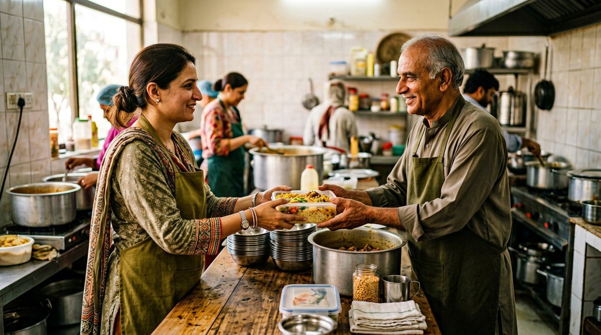

01 / SHARE
Restaurants & food centers
Have surplus food? Join as a food business and, once verified, share what you have with the community.
Register as a food businessWhen good food is left over, good things can happen. We bring restaurants, welfare organizations, and communities together to share more and waste less.

However you are joining us, there is a way to make a difference at the table.
Have surplus food? Join as a food business and, once verified, share what you have with the community.
Register as a food businessFind available food for the people you support. Approved organizations can book a collection from a center.
Register your organizationLooking for a meal? Register once to find FoodBridge centers and partner meal locations near you.
Register as an individualGood food has a beautiful way of bringing people together. Here is how our community makes that happen.
Restaurants and organizations register and are reviewed by our team. Individuals can register to see meal locations.
Approved food businesses list surplus food and the FoodBridge center where it will be available for collection.
Verified organizations book a pickup and arrange their own collection. Individuals can visit listed centers or partners.
Be part of a kinder, more connected food community.